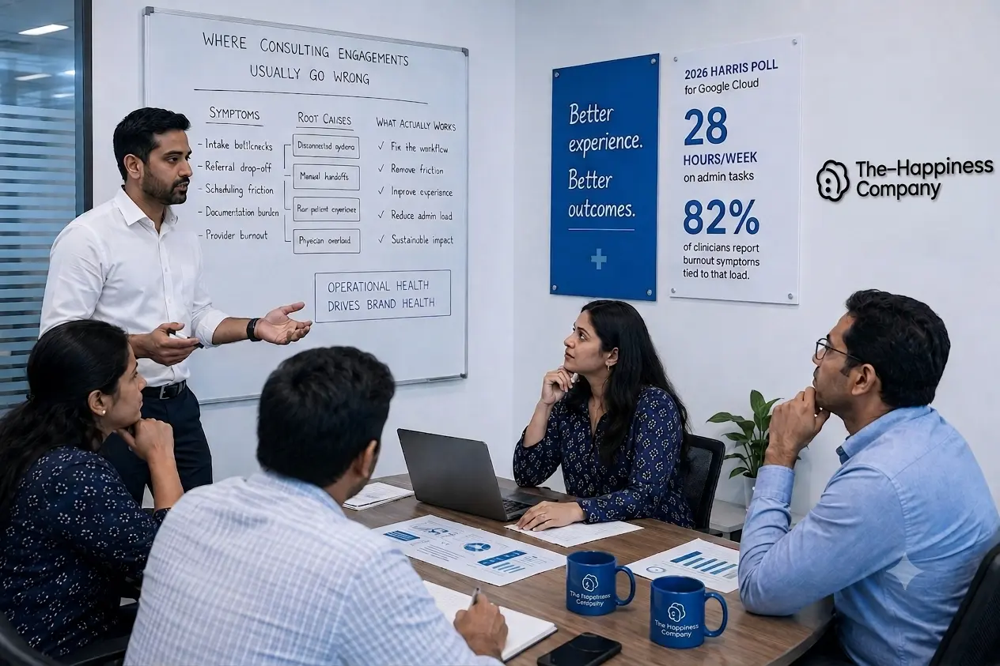

You've Already Tried the Rebrand. Here's Why It Didn't Hold.
A new identity can't fix a workflow that's bleeding staff and margin underneath it. Healthcare Engineering diagnoses the structural problem first, then builds strategy, brand, and growth on a foundation that's stable.
The Diagnosis
Where Consulting Engagements Usually Go Wrong
Most consulting and branding engagements start in the wrong place: a new identity, a campaign, a positioning statement. They start there because it's the visible, deliverable-friendly part of the work, and because the firms selling it have rarely run a clinic.
Meanwhile the real leaks go untouched: intake bottlenecks, referral drop-off, a scheduling system that creates a bad first impression before a patient sees a provider, documentation that eats hours a physician doesn't have. The rebrand launches, activity lifts for a quarter, then the same operational drag reasserts itself. The budget is gone and the organization is back where it started, with less appetite to try again.
National survey data backs this pattern up: a 2026 Harris Poll survey for Google Cloud found clinicians spend close to 28 hours a week on administrative tasks, and 82 percent report burnout symptoms tied to that load. Fix the workflow and you're also treating a real cause of the turnover problem next door.

The Reframe
Healthcare Engineering, Defined
Healthcare Engineering is our term for doing this work in the right order: structure first, an audit-plus-branding exercise never.
Diagnostic Audit
Stakeholder interviews across clinical, administrative, and ownership perspectives, paired with a direct review of workflows, scheduling, referral paths, and documentation load.
Root-Cause Mapping
The findings get traced back to their origin, not their symptom: distinguishing, for example, a staffing shortage that's a scheduling-design problem from one that's genuinely a hiring problem.
Structural Rebuild
We rebuild the operational pieces the diagnosis identified, in the sequence that prevents the fix from being undone by whatever caused the original problem.
Brand & Growth Strategy
Only now does external-facing work begin — positioning, messaging, and growth strategy built on a structure that can support the claims being made.
Phases 1 and 2 draw on the Human & Behavioral Diagnostics and Analytical & Data-Driven Rigor pieces of our method. Phase 3 onward is Business Strategy & Execution taking over. The end point isn't a new brand: it's fewer of the resignations, referral losses, and margin leaks that made the old one look necessary.
Sub-Services
Four Kinds of Consulting, One Diagnostic Method
Consultancy at THC isn't one undifferentiated service. It splits into four areas, each addressing a different part of what determines whether a healthcare organization thrives, and each still runs through the same diagnostic method described above. Each card below expands into full detail on request.
The System
Where This Connects
A strategy is only as durable as the people executing it and the margin funding it. The structural rebuild in Phase 3 typically surfaces skill and culture gaps that need direct attention, which is the work of our Corporate Training & Employee Wellness vertical. Skip it, and a well-designed strategy gets carried out inconsistently and quietly reverts. And because a transformation takes months to pay for itself, engagements often start with a procurement review instead, since the margin freed up through Guided Buying is frequently what funds the consultancy work without new budget.